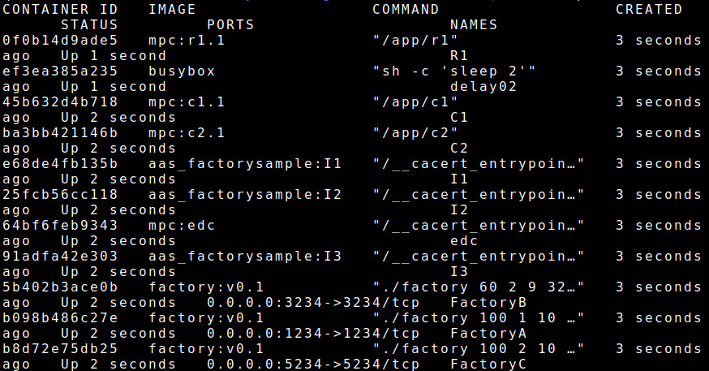
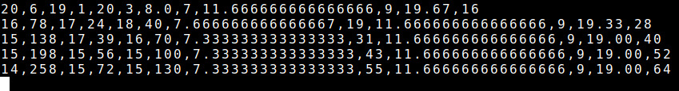

T07 - EDC & MPC
EDC Connectors are used for the exchange between Input, Computation, and Result nodes of a Multi-Party Computation (MPC) scenario. This use case is an updated version of the Tutorial 06. In particular, the scenario contains a new concept DS-AAS DT, which is an AAS DT integrated with Data Space connector. The detailed architecture of the use case is presented in the paper “Model-Driven Development of Data Space-Enabled Asset Administration Shell Digital Twins” presented in MDE4SA@ICSA2026.
Requirements
The following components are required:
Computer with pre-installed Papyrus4Manufacturing nightly version
LocalSEA T07 Kit including some read-to-run software components
The following knowledge are required:
Understanding of T06 - EDC Connector
Basic about Java + Eclipse IDE
Basic about AAS
Basic about EDC
Basic about Docker
Basic about Docker Compose
Deployment Instructions
In this example, all software components will be run on a computer;
however, it is possible to run them in different machines with extra
configurations.
After downloading the T07 Kit, decompress it to get the ten packages:
(1) factory_v0.1.tar.gz contains the Docker image to run factories,
(2) aas_factory_vI1.tar.gz contains the Docker image to run input node I1,
(3) aas_factory_vI2.tar.gz contains the Docker image to run input node I2,
(4) aas_factory_vI3.tar.gz contains the Docker image to run input node I3,
(5) mpc_c1.1.tar.gz contains the Docker image to run compute node C1,
(6) mpc_c2.1.tar.gz contains the Docker image to run compute node C2,
(7) mpc_r1.1.tar.gz contains the Docker image to run compute node R1,
(8) mpc_edc.tar.gz contains the Docker image to run EDC connector for R1,
(9) docker-compose.yml contains the docker-compose script, and
(10) T07-Factory.zip contains the AAS information model for DS-AAS DT.
Experiment setup
On the computer, install the Docker image with the following command:
$ docker load -i factory_v0.1.tar.gz
$ docker load -i aas_factory_vI1.tar.gz
$ docker load -i aas_factory_vI2.tar.gz
$ docker load -i aas_factory_vI3.tar.gz
$ docker load -i mpc_c1.1.tar.gz
$ docker load -i mpc_c2.1.tar.gz
$ docker load -i mpc_r1.1.tar.gz
$ docker load -i mpc_edc.tar.gz
In the folder with the docker-compose.yml file, create a result.csv file to store the use case experimental output:
$ touch result.csv
Then, run all docker images using the docker compose with the following command:
$ docker compose up
To verify the running Docker containers, using the command $ docker ps, and
the result should be:

To verify the monitored result, using the command $ tail -f result.csv, and
the result should be:

Factory DS-AAS DT setup (Optional)
Running with docker compose, then the DS-AAS DTs are already configured correctly. This subsection provides only extra information for users who want to implement DS-AAS DT using Papyrus4Manufacturing.
Extract T07-Factory.zip with the following command:
$ unzip T07-Factory.zip
Open Papyrus4Manufacturing and import the project, users can follow the steps as in T06 - EDC Connector tutorial, except some differences. When a new project AAS_FactorySample is generated, users open the file DynamicElementsWorkspace.java inside the package share1 and modify it as follows.
public Integer get_Share1_number_products() {
Integer defaultVar = Integer
.parseInt(connectedDevices.ep_http.readValue("/number"));
defaultVar = (int) Math.round(defaultVar * 0.4);
Cache.properties.put("Share1_number_products", defaultVar);
return defaultVar;
}
public Integer get_Share1_price() {
Integer defaultVar = Integer
.parseInt(connectedDevices.ep_http.readValue("/price"));
defaultVar = (int) Math.round(defaultVar * 0.4);
Cache.properties.put("Share1_price", defaultVar);
return defaultVar;
}
Also, users open the file DynamicElementsWorkspace.java inside the package share2 and modify it as follows.
public Integer get_Share2_price() {
Integer defaultVar = Integer
.parseInt(connectedDevices.ep_http.readValue("/price"));
defaultVar = defaultVar - (int) Math.round(defaultVar * 0.4);
Cache.properties.put("Share2_price", defaultVar);
return defaultVar;
}
public Integer get_Share2_number_products() {
Integer defaultVar = Integer
.parseInt(connectedDevices.ep_http.readValue("/number"));
defaultVar = defaultVar - (int) Math.round(defaultVar * 0.4);
Cache.properties.put("Share2_number_products", defaultVar);
return defaultVar;
}
It makes the values of share1/share2 are 40/60.